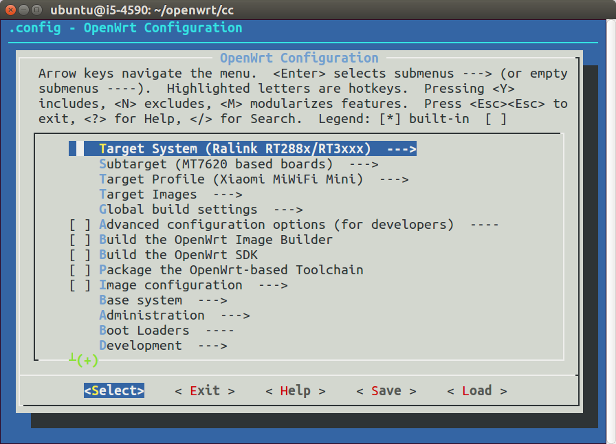
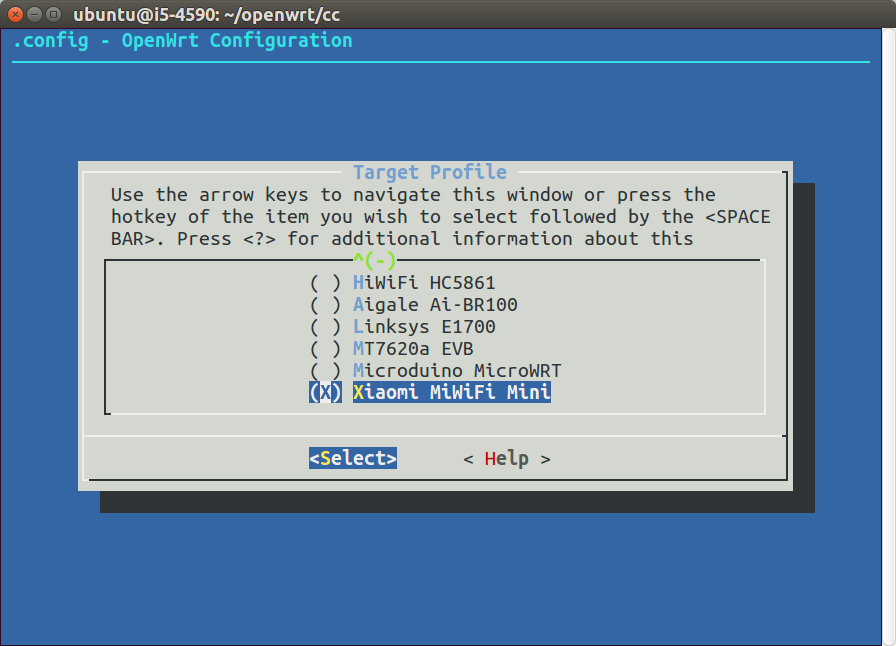
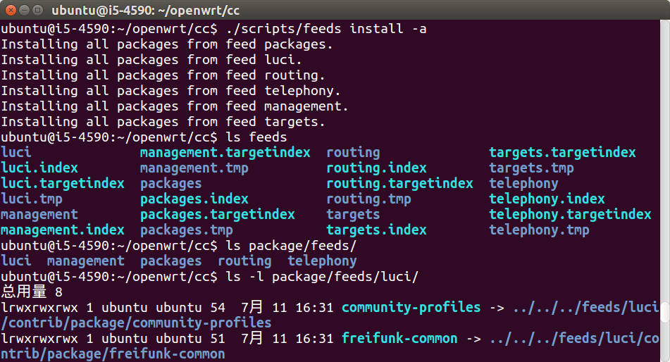
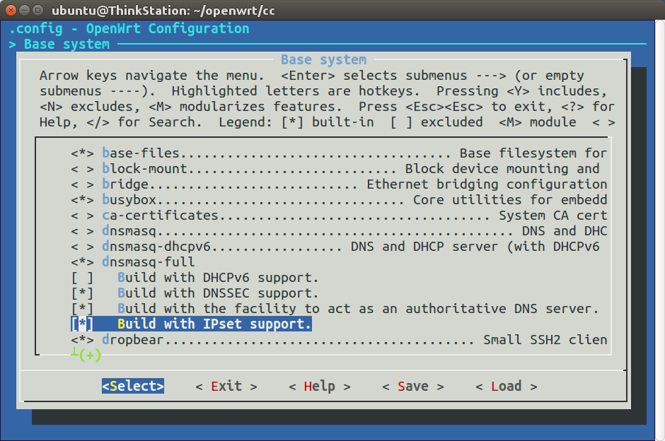
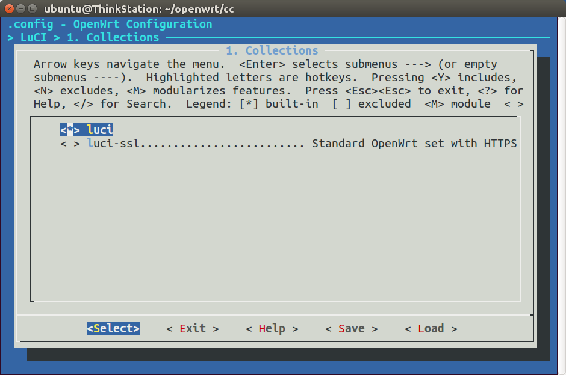
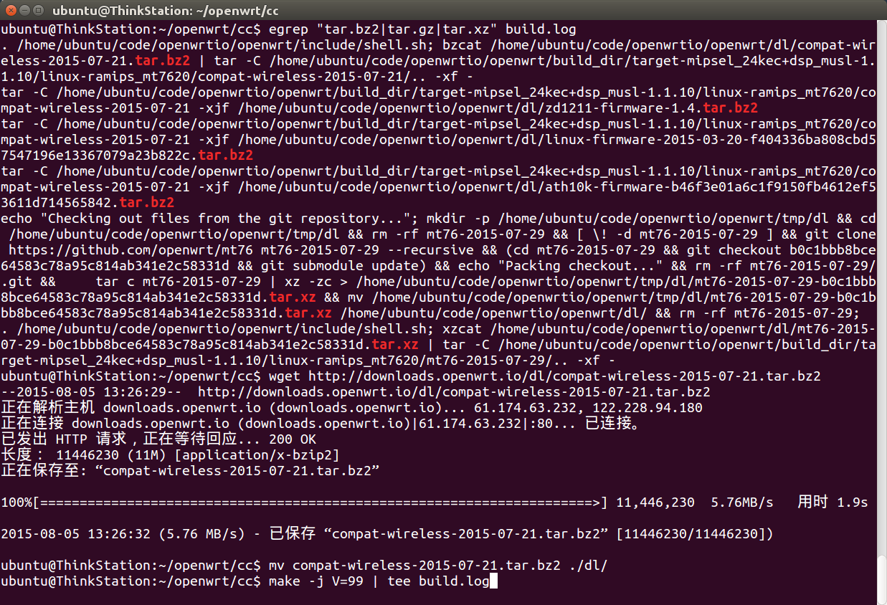
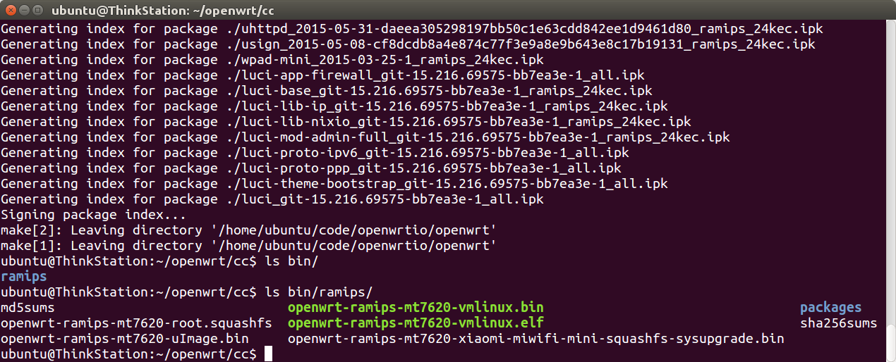
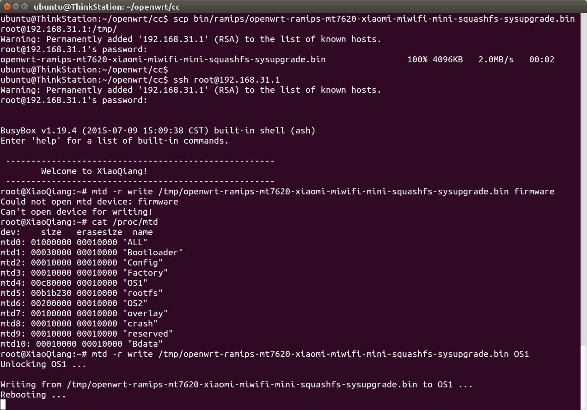
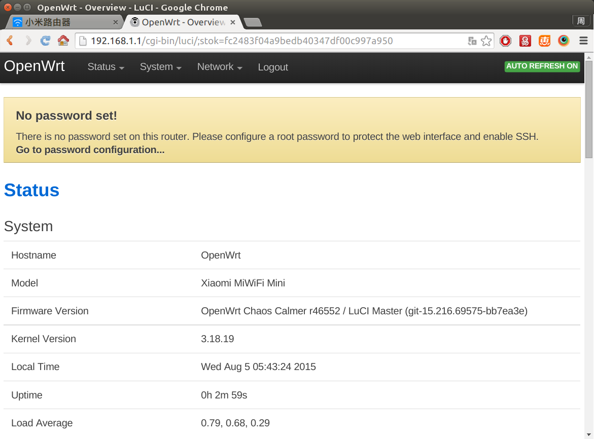
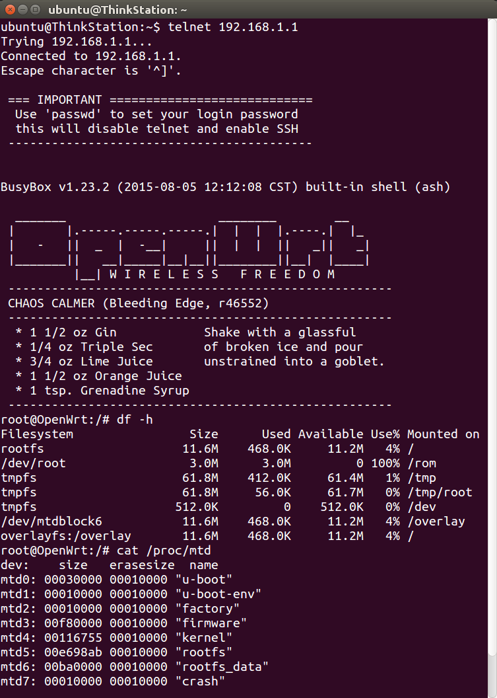

编译固件 Build OpenWrt Firmware
如果从网上下载的固件不能满足需求，那就需要自己编译了。
OpenWrt系统已经发布了多个版本，如下：
| 发布时间 | 版本号 | 开发代号 |
|---|---|---|
| 2013年4月 | 12.09 正式版 | Attitude Adjustment |
| 2014年10月 | 14.07 正式版 | Barrier Breaker |
| 2015年9月 | 15.05 正式版 | Chaos Calmer |
这些版本号很长，打字费劲，黑话称之为AA、BB、CC，简洁多了。
新的硬件软件都会加入到最新版本中，而以前的稳定版本只是维护修bug，所以爱好者一般编译最新版。本文以编译CC为例进行讲解。
下载最新代码
首先把系统代码下载下来，官方代码在https://dev.openwrt.org/wiki/GetSource，如果下载很慢，可以使用国内镜像项目，在https://coding.net/u/openwrtio/p/openwrt/git。如果以前下载过，记得时常更新。指令如下：
cd ~/openwrt/
git clone -b master git://git.coding.net/openwrtio/openwrt.git cc
cd cc
git pull origin master
查看是否支持手中的路由器
打开配置界面，按照图中进行选择，国内常见的智能路由器都是联发科MT7620芯片的，所以Target System选Ralink RT288x/RT3xxx，Subtarget选MT7620 based boards，然后进入Target Profile，可以看到小米路由器mini已经加入到开源系统中，所以本文已它为例，没有的童鞋可在京东购买（￥129）。
make menuconfig
 
更新可选的软件源（Feeds）
系统必须的软件是和系统代码集成在一起的，在package目录里，而其他可选的软件在各个订阅源里（地址在feeds.conf.default里），一般会需要一些，所以进行下载更新，指令如下：
./scripts/feeds update -a
./scripts/feeds install -a

可以看到，feeds目录中出现了很多文件，package/feeds里出现了很多软链接指向feeds。
软件配置
然后再打开配置界面，选择需要的软件（*是集成到固件里，M是编译成ipk手动安装），然后退出保存。建议取消dnsmasq，集成dnsmasq-full。常用的软件有：
| 位置 | 用途 |
|---|---|
| Base system > dnsmasq-full > Build with IPset support. | dnsmasq的IPset |
| LuCI > 1. Collections > luci | 路由器网页管理后台 |
make menuconfig
 
编译
使用-j参数开启多核编译，速度会更快。指令如下：
make -j V=99 | tee build.log
然后等待即可。快则几十分钟，慢则几个小时，视CPU性能而定。如果出现文件下载太慢或下载失败，则取消编译，使用下列命令，找出正在下载的文件名，然后到本站的国内镜像下载：http://downloads.openwrt.io/sources/，放到dl目录中，然后重新编译。
egrep "tar.bz2|tar.gz|tar.xz" build.log

编译成功后，会在bin目录中生成固件，比如小米路由mini的固件是openwrt-ramips-mt7620-xiaomi-miwifi-mini-squashfs-sysupgrade.bin。

刷机
小米路由开放root，按照文档开启（http://miwifi.com/miwifi_open.html），然后把固件scp进去，刷机。指令如下：
{kind=link}
scp bin/ramips/openwrt-ramips-mt7620-xiaomi-miwifi-mini-squashfs-sysupgrade.bin root@192.168.31.1:/tmp/
ssh root@192.168.31.1
cat /proc/mtd
mtd -r write /tmp/openwrt-ramips-mt7620-xiaomi-miwifi-mini-squashfs-sysupgrade.bin OS1

PS：如果写入firmware报错“Could not open mtd device: firmware”和“Can't open device for writing!”，使用cat /proc/mtd查看闪存，改成写入OS1即可。
刷机完成后，就能看到熟悉的OpenWrt路由器界面了，可以看到根目录有11M可写，可以安装各种ipk软件，可玩性大大增加。
 